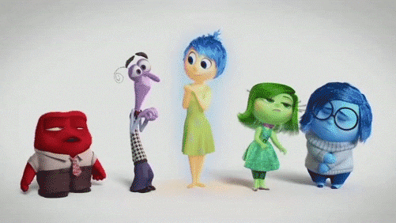

Uso del neuromarketing
Procesos cerebrales en el marketing
En esta entrada del blog veremos las aplicaciones del neuromarketing para comprender las decisiones de los consumidores y de esta manera, justificar la siguiente pregunta:
¿Cómo actúa el componente afectivo en las decisiones de compras de los consumidores?

El neuromarketing estudia los procesos cerebrales que explican la conducta y la toma de decisiones de las personas. Tiene aplicación o aporta en cada uno de los campos del mercadeo, no solamente cuando se investiga un mercado, sino también cuando se investiga el desarrollo de un producto. Se usa también para elaborar, crear, y establecer estrategias de comercialización y para la determinación de un precio.
En cuanto a las decisiones de compra, investigaciones de neuromarketing aseguran que la toma de decisiones depende de los sentimientos. Sin un vínculo emocional no hay marca rentable, pues el involucramiento con lo racional es bajo.
Decisiones de compra emocionales
Los esfuerzos del Marketing en un principio se han centrado en influir en las decisiones de compra a través de la persuasión, basándose en el comportamiento racional (características, ventajas, comparaciones, precio, etc), pues según esto, los consumidores generalmente buscan maximizar las utilidades y ahorrar. Sin embargo, los seres humanos están fuertemente influenciados por sus emociones, influencias sociales y prejuicios. Observamos a los compradores comportarse de manera irracional y con cambios repentinos de sus preferencias, a pesar de lo que ellos podrían pensar o decir.
Este punto de vista emocional o impulsivo, sostiene que las compras realizadas sobre una base emocional, conceden menos importancia a la información y consiguientemente dan mayor importancia a su estado de ánimo, sus sentimientos del momento e influencias del contexto. “The Role of Emotions in Marketing” (Bagozzi, 1999) un estudio sobre el papel de las emociones en el marketing, afirma que las emociones desempeñan un papel fundamental en la vida de las personas y, por consiguiente, en el comportamiento del consumidor.
Desde que se ha descubierto que la emoción es un factor influyente del proceso mental, la importancia de este ha incrementado hasta convertirse en algo fundamental en el marketing. Por esta razón surge la necesidad de ir más allá en lo que la investigación de mercados se refiere combinando las técnicas de investigación tradicionales con herramientas neurocientíficas que nos permiten medir las reacciones no conscientes de las personas como: la emoción, la atención, la memoria, entre otras. Hoy en día, la mayoría de empresas utilizan un marketing emocional.
Ejemplos de marcas que han utilizado el componente afectivo para aumentar sus ventas
McDonald's
McDonalds sacó la campaña “I’m lovin it 24” debido a su primera caída en las ventas en más de una década. La campaña fue dirigida a traer momentos de alegría para que las personas asocien la sensación de felicidad con la marca.
El resultado ayudó a reposicionar a la marca como una de las más valiosas del planeta.
MetLife Hong Kong
En contraste a la felicidad que transmite la marca anterior, la tristeza también puede funcionar fácilmente como el primer paso para conseguir que la gente se conecte con sus marcas. El anuncio de MetLife Hong Kong que refleja el amor inquebrantable de un padre por su hija es un gran ejemplo de cómo usar la emoción de tristeza. El resultado final fue una campaña emocionalmente estimulante que ha acumulado más de 13 millones de visitas en YouTube.
Reflexiones finales
El neuromarketing puede resultar realmente interesante para analizar diferentes estímulos y reacción inconsciente de estos en los consumidores. Para las empresas esta nueva ciencia puede resultar de gran ayuda para averiguar aspectos como la percepción que se tiene sobre la marca, conceptos adecuados para crear un slogan, beneficios, etc., que mayor impacto emocional generan en los compradores.
A modo de conclusión, pienso que el componente afectivo debe ser clave en la estrategia de marketing de una marca. Esta debe ser capaz de generar un vínculo con la emocionalidad del consumidor, exponiendolo a estímulos que inconscientemente lo incentivan a modificar su comportamiento de compra y de esta manera, tomar la decisión, no solo de comprar el producto, sino de crear una lealtad y conexión con la marca.
Referencias
Maram, L. (2018, 22 abril). Ejemplos de marketing emocional en marketing digital. Luis Maram. https://cutt.ly/Hgslia4
Carasila y Milton (2010). Neuromarketing: Las emociones y el comportamiento de compra. Perspectivas, (25),9-24. https://cutt.ly/xgslk6R
El papel de las emociones en la experiencia de compra. (2018). Neuromarketing. https://cutt.ly/cgslciI
Domínguez, J. M. (2020). Las decisiones de compra ¿son racionales o emocionales? Magenta Innovación Gerencial SL. https://cutt.ly/kgslmIU
Braidot, N. (2019). ¿Qué es el Neuromarketing y cómo se implementa en la práctica? Instituto Braidot. https://cutt.ly/Bgsl3Y5
García, D. S. (2012). Neuromarketing: Qué es y cómo se implementa. Por Nestor Braidot, experto internacional. Cerebro en práctica. https://cutt.ly/vgszqpE
Braidot, N. (2019). ¿Cuándo se utiliza el Neuromarketing? Instituto Braidot. https://cutt.ly/ugslAfJ